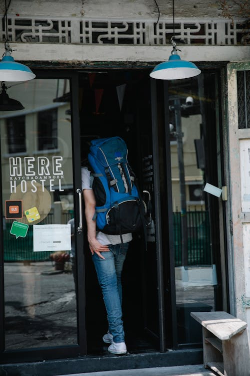

ENJOY THE FINEST LODGING TANITI HAS TO OFFER!

Taniti has a wide variety of lodging that ranges from an inexpensive hostel to one large, four-star resort. There are many small, family-owned hotels and a growing number of bed and breakfasts. All types of lodging are strictly regulated and regularly inspected by the Tanitian government.
Hostels
Hostels on Taniti Island are the most popular option for youth and those looking to travel on a budget. Hostels tend to offer more basic services, and many have group style lodging with bunk beds. Hostels remain the most affordable option in addition to being the most plentiful, with many small Hostels located all over the city, as well in suburban and more rural areas of the island.
Hotels
Hotels remain the most popular option for travelers to the island. Taniti's hotels have a broad price range, enabling travelers to find options within their budget. The majority of hotels have options for reservations, especially those offering luxury suites or other special services. Contact our travel agency for more information.
Bed & Breakfast

Bed and Breakfast options are becoming more and more popular every year on Taniti Island. Most are located on the fringes of the city limits, suburban, and rural areas as well. Most locations are a cheaper option for travelers looking to budget.
Taniti Island 4-Star Resort
The Taniti Island 4-Star Hotel and Resort is the premiere location for luxury and comfort. Our luxury suites have the greatest views of the island, and all the amenities and services you can imagine. Make reservations today.